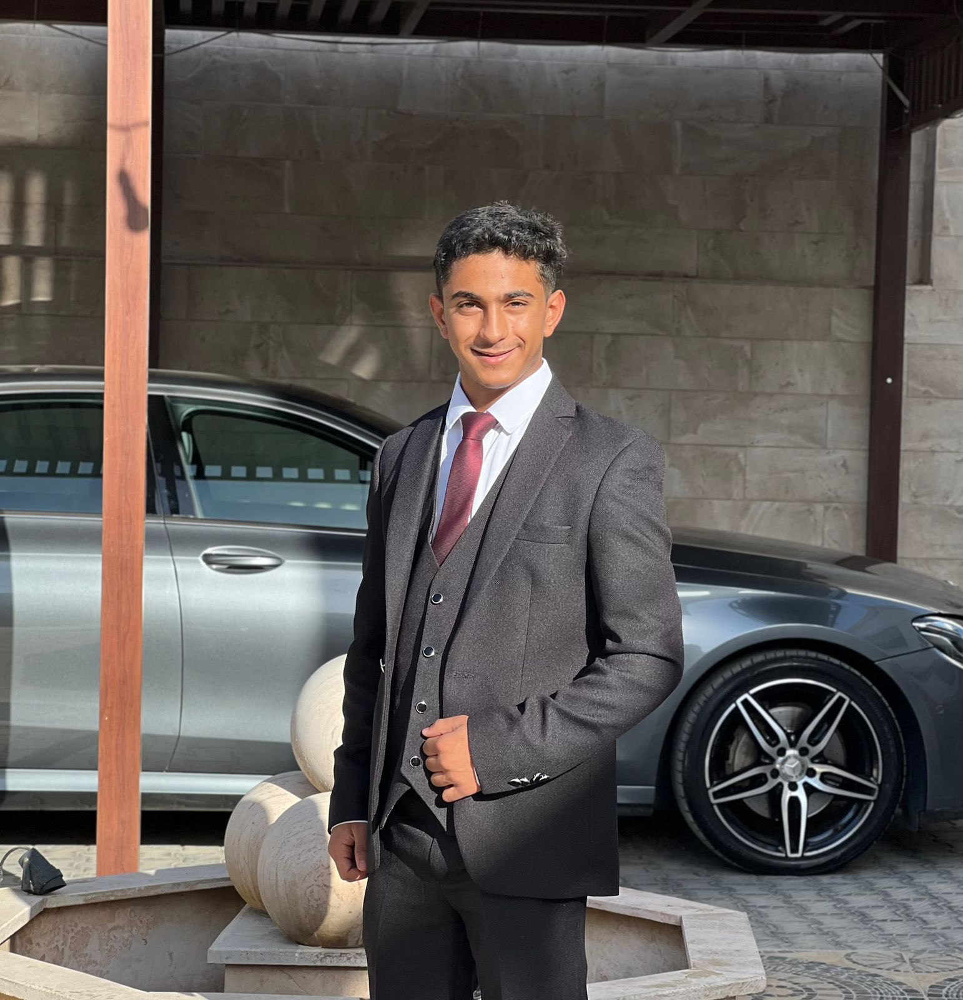
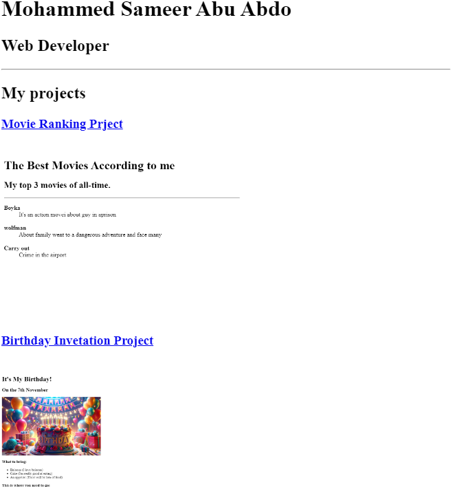

Mohammed Sameer Abu Abdo

Summary
A motivated and detail-oriented computer engineering student with a strong academic record and a passion for technology. Active member of IEEE PES UJSC 2025, with experience participating in conferences and technical discussions. Skilled in Java and web development, with proficiency in Microsoft Office tools. Currently expanding expertise in software and web development through online courses.
Education
- Bachelor’s in Computer Engineering
- University:The University Of Jordan
- Year: Third Year
- GPA: 3.69
- 12th Grade (High School Certificate)
Work Experience
IEEE PES UJSC Member (2025)
- Actively participated in IEEE events and technical discussions.
- Engaged in knowledge-sharing sessions related to power and energy systems.
- Assisted in organizing conferences and networking events.
Conference Participation
- Attended multiple technology and engineering conferences.
- Gained insights into emerging trends in computer engineering and software development.
Skills
- Programming: Java, HTML
- Web Development: Enrolled in "The Complete Web Development Course" (Udemy)
- Software Proficiency:Microsoft Word, PowerPoint, Excel
- Technical Knowledge:Familiar with software development and engineering concepts
- Problem-Solving:Strong analytical and critical thinking skills
My projects
